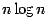
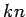
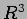
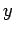
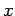
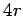
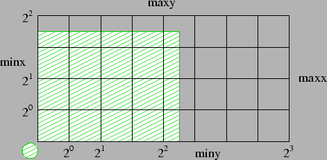
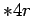

Nächste Seite: Exkurs: Aufwärts: Kollisionsdetektion Vorherige Seite: Exkurs (Jedem Partikel seine Inhalt

. Das ist aber gerade im interaktiven Bereich auf Grund der hohen Kosten für die Physik, die wie in 3 gezeigt eine Ordnung von
haben, vernachlässigbar. Beispielläufe zeigen, daß selbst bei 1 Mio. Partikeln keine 10% der Rechenzeit für Sortieren verwendet werden. In 3.1 habe ich zwar behauptet, man bräuchte im Dreidimensionalen 8 Gittersysteme um garantieren zu können, dass sich alle Kollisionspartner eines Partikels in einer wie oben bestimmten Zelle befinden. Was aber unter 3.1 nur eine theoretische Überlegung war, ist bei der impliziten Zelleinteilung Notwendigkeit. In einer Sortierung des
kann es nur in zwei Richtungen Nachbarn geben. Die Zellen in der nächsten Ebene liegen in der sortierten Liste in unbekannter Ferne. Wenn aber diese zwei Richtungen, in denen man die Nachbarzelle finden kann, ausgenutzt werden, so braucht man im nur noch vier Listen.Im Eindimensionalen wird sofort klar, dass man kein Gitter braucht. Man muss die nach der Koordinate sortierte Liste vom betrachteten Partikel aus nur so lange in beide Richtungen durchlaufen, bis man auf ein Partikel trifft, das zu weit weg ist, um zu kollidieren. Alle Weiteren in dieser Richtung können nur noch weiter weg sein.
Um im Höherdimensionalen sortieren zu können, wird ein etwas komplizierteres Kriterium benötigt. Hier ist dies ein Zellindex, der sich bei mir wie folgt zusammensetzt:
Die höchsten Bits repräsentieren die Position in    -Richtung, danach kommt die Position in
-Richtung, danach kommt die Position in
|
 |
Abb. 3.1 zeigt in 2D, welches Simulationsgebiet bei der Wahl des grün schraffierten Gebietes und der grün schraffierten Partikelgröße zur Verfügung steht. Aus der Bit-weisen Einteilung des Zellindex ergibt sich, dass das Simulationsgebiet in jeder Raumdimension separat auf die Zweierpotenz 